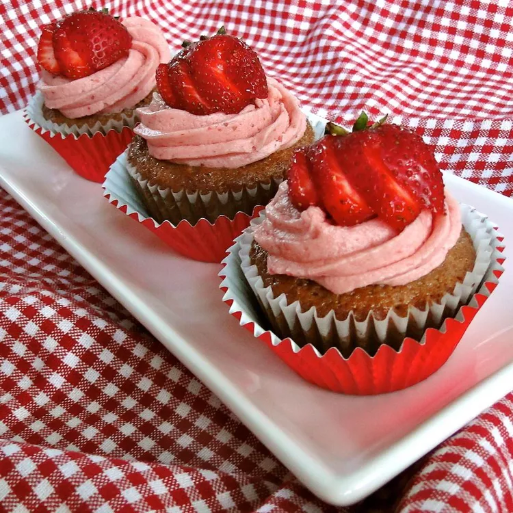

Cupcake Recipe

Description
This is a Chocolate with Strawberries Cupcake recipe. Easy to make, delicious and light. It can be a great way to make an extra income if you are an university student or just want some extra money for the weekend.
It does take sometime to put the chocolate and Strawberries inside the Cupcake but that would be the "time consuming" part of the recipe, other than that it quite an easy recipe to make and great for beginners.
Ingredients
- 110g softened butter
- 110g golden caster sugar
- 2 large eggs
- 1/2 tsp vanilla extract
- 110g self-raising flour
- about 10 Strawberries
For the buttecream
- 150g softened butter
- 300g icing sugar
- 1 tsp vanilla extract
- 3 tbsp milk
Steps
- Heat oven to 180C/160C fan/gas 4 and fill a 12 cupcake tray with cases.
- Using an electric whisk beat 110g softened butter and 110g golden caster sugar together until pale and fluffy then whisk in 2 large eggs, one at a time, scraping down the sides of the bowl after each addition.
- Add ½ tsp vanilla extract, 110g self-raising flour and a pinch of salt, whisk until just combined then spoon the mixture into the cupcake cases.
- Bake for 15 mins until golden brown and a skewer inserted into the middle of each cake comes out clean. Leave to cool completely on a wire rack.
- To make the buttercream, whisk 150g softened butter until super soft then add 300g icing sugar, 1 tsp vanilla extract and a pinch of salt.
- Whisk together until smooth (start off slowly to avoid an icing sugar cloud) then beat in 3 tbsp milk.
- If wanting to colour, stir in the food colouring now. Spoon or pipe onto the cooled cupcakes.
Go Back!